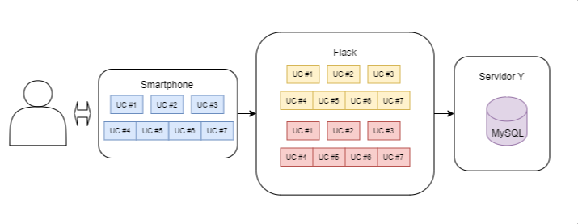

Diagrama de Casos de Uso
Um caso de uso define uma sequência de ações executadas pelo sistema que geram um resultado de valor
observável para um
ator em particular. A seguir, é mostrado o diagrama de Casos de Uso no qual se baseia o desenvolvimento
da aplicação

Clique na imagem para confirir as especificações de cada caso de uso.
Diagrama System Metaphor
O diagrama System Metaphor, ou "metáfora do sistema" consiste em uma visualicação geral das camadas do
sistema no qual também se exibe brevemente as tecnologias utilizadas e o em que layer elas funcionam.

Modelo C4 em níveis
O modelo C4 consiste em um conjunto hierárquico de diagramas de arquitetura de software para contexto, containers,
componentes e código. A hierarquia dos diagramas C4 fornece diferentes níveis de abstração, cada um dos quais é relevante para um público
diferente.